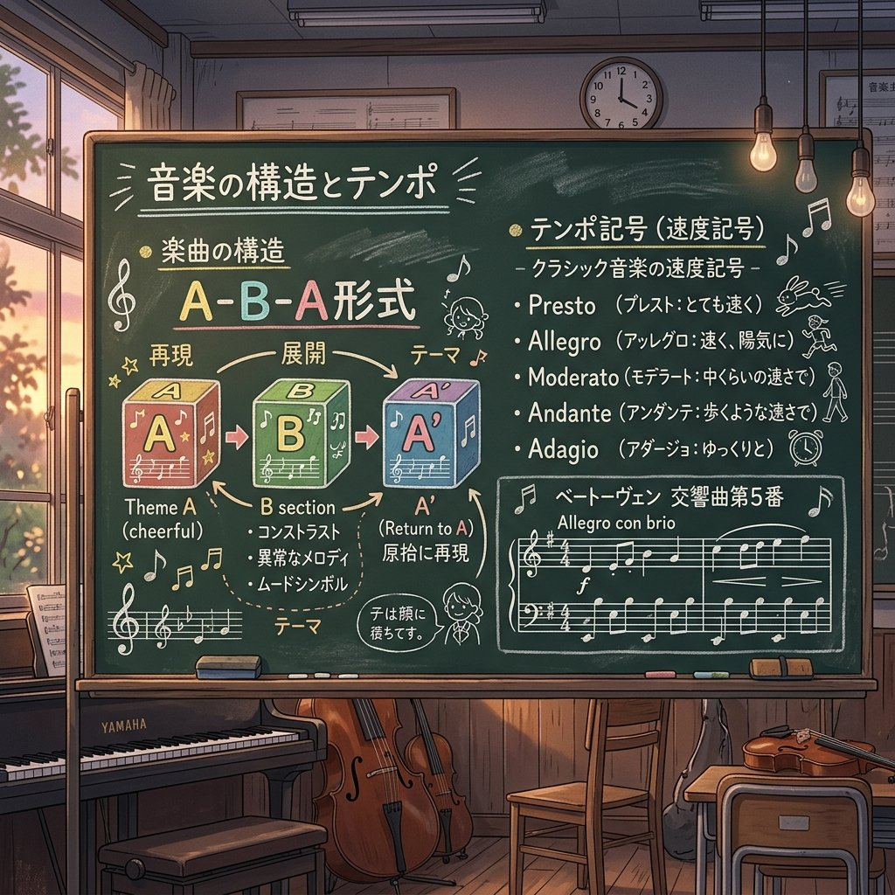
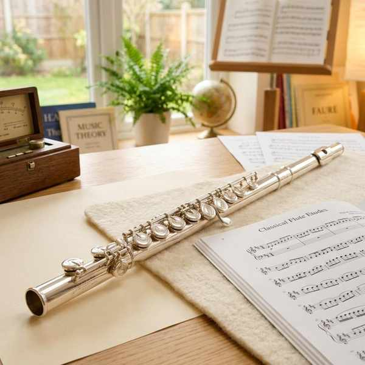
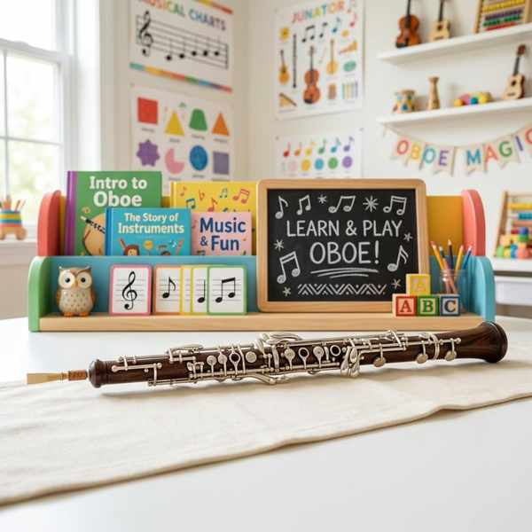
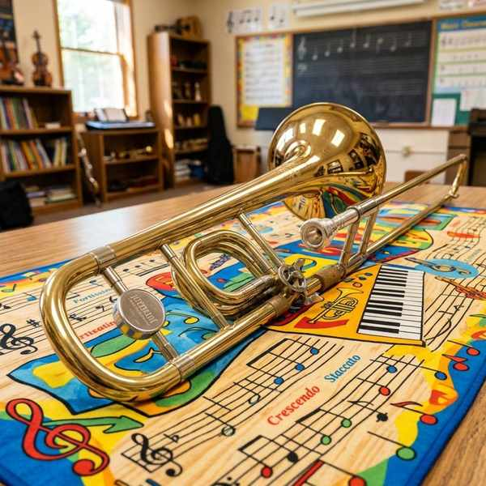
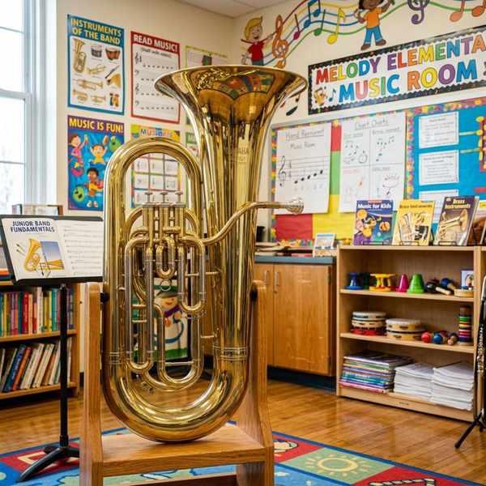
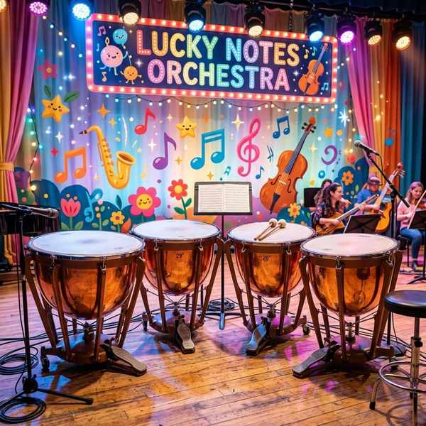
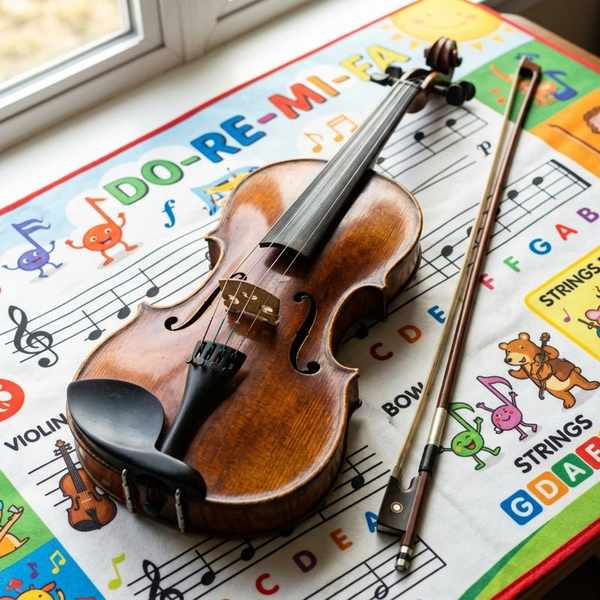

音楽の知識③ (記号・用語・楽曲形式・オーケストラ楽器)
演奏のニュアンスを示す強弱記号、テンポを決める速度記号、音の出し方を示す演奏・反復記号、楽曲の構造を表す楽曲形式、そしてオーケストラで活躍する様々な楽器の特徴を整理します。覚えることが多い単元ですが、系統立ててすっきり暗記しましょう！
1. 強弱記号と強弱変化
音の強弱を表す記号は、イタリア語の読み方と日本語の意味を対比して覚えます。
| 記号 | 読み方 | 意味 |
|---|---|---|
| pp | ピアニッシモ | とても弱く |
| p | ピアノ | 弱く |
| mp | メッゾ ピアノ | 少し弱く |
| mf | メッゾ フォルテ | 少し強く |
| f | フォルテ | 強く |
| ff | フォルティッシモ | とても強く |
① 強弱の変化を表す記号
- ＜ または cresc.（クレシェンド） ➔ だんだん強く
- ＞ または decresc.（デクレシェンド）／ dim.（ディミヌエンド） ➔ だんだん弱く
2. 速度用語と速度変化
曲のテンポ（演奏する速さ）を指定する言葉です。
| 用語 | 読み方 | 意味 |
|---|---|---|
| Largo | ラルゴ | 幅広く緩やかに（きわめて遅く） |
| Andante | アンダンテ | ゆっくり歩くような速さで |
| Moderato | モデラート | 中ぐらいの速さで |
| Allegro | アレグロ | 速く |
| Presto | プレスト | 急速に（きわめて速く） |
① 速度の変化を表す用語
- rit.（リタルダンド） ➔ だんだん遅く
- accel.（アッチェレランド） ➔ だんだん速く
- a tempo（ア テンポ） ➔ もとの速さで（rit.などの変化のあと、元の速さに戻します）
- Più mosso（ピウ モッソ） ➔ 今までより速く
- Meno mosso（メーノ モッソ） ➔ 今までより遅く
3. さまざまな演奏記号と反復記号
① 演奏のしかたを示す記号（アーティキュレーション）
- スタッカート（音符の上の点） ➔ その音を短く切って。
- テヌート（音符の上の横線） ➔ その音の長さを十分に保って。
- アクセント（音符の上の ＞） ➔ その音を目立たせて、強調して。
- フェルマータ（半円に点） ➔ その音符（または休符）をほどよくのばす。
- タイ（同じ高さの音を結ぶ弧線） ➔ 2つの音をつなげて1つの音としてのばす。
- スラー（違う高さの音を結ぶ弧線） ➔ それらの音を滑らかに（つなげて）演奏する。
- legato（レガート） ➔ 滑らかに。
- poco a poco（ポコ ア ポコ） ➔ 少しずつ（例：poco a poco cresc. ＝ 少しずつだんだん強く）。
② 曲の繰り返しを示す反復記号
- D.C.（ダ カーポ） ➔ 最初に戻る。
- D.S.（ダル セーニョ） ➔ セーニョ記号（𝄋）に戻る。
- Fine（フィーネ） ➔ D.C.やD.S.で戻った後に現れる、曲の終わりを示す語。
- コーダ記号（𝄌） ➔ 繰り返し後にコーダ記号間をジャンプして結び（コーダ）に進みます。
4. 楽曲の構成形式

メロディのまとまりを「A」や「B」として捉えた形式のパターン。
- 一部形式 ➔ 「A」だけでまとまる最もシンプルな楽曲形式。
- 二部形式 ➔ 「A - B」の2つの部分でまとまる形式。
- 三部形式 ➔ 「A - B - A」のように、対照的なBを挟んでAが戻る形式。
- ソナタ形式 ➔ クラシックの交響曲の第1楽章に多い、提示部 ➔ 展開部 ➔ 再現部 ➔ コーダ（結尾部）からなる非常に完成された形式。
- フーガ ➔ バロック時代に盛んだった、1つの主題（テーマ）を他の声部が追いかける多声部形式。
5. オーケストラの代表的な楽器の特徴
オーケストラ（管弦楽）を構成する楽器の中で、テストで出題される特徴的な楽器たちです。

1オクターブ高い音を出す

オーケストラの音合わせの基準になる

音の高さを変える金管楽器

最も低い低音を担当する

音の高さを変えられる太鼓

最も高い音を担当する
🔥 定期テスト対策・暗記のコツ
① タイとスラーの決定的な違い（超頻出！）
「タイ ➔ 同じ高さの音をつなぐ（音は伸ばし、2つ目は弾き直さない）」
「スラー ➔ 違う高さの音をつなぐ（なめらかに演奏する）」
図を見せて記号名を答えさせる問題や、違いを説明させる問題が非常によく出ます。
② D.C.とD.S.の戻り先の違い
「D.C.（ダ カーポ） ➔ 曲の最初（Capo＝頭）に戻る」
「D.S.（ダル セーニョ） ➔ セーニョ記号（𝄋）に戻る」
アルファベットの頭文字と意味をしっかり結びつけて整理しましょう。
③ 音合わせの基準楽器はオーボエ！
オーケストラでチューニング（音合わせ）を行う際、基準となる「ラ（A）」の音を吹くのはオーボエです。オーボエは周囲の温度や湿度の影響を受けにくく、音が安定しているため、全体の基準に選ばれています。非常に頻出のトリビア問題です！